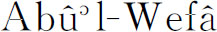

6．阿拉伯的几何与三角
阿拉伯几何主要受欧几里得、阿基米德和赫伦的影响。阿拉伯人确曾对欧几里得的《原本》作过评注，这是很使人惊异的事，因为这说明他们还是欣赏数学的严格性的，尽管他们在代数上通常是不管这个的。这些评注中包括关于平行公理的著述，那是我们以后还要讲到的（第36章）。它们的价值不在于给出了什么新的结果或新的证明，而多半在于提供了关于阿拉伯人所知道而如今已失传的希腊手稿的情况。波斯人阿布尔韦法（

）［或阿尔布加尼（Albuzjani，940—998）］探讨了一个新的问题：用直尺和固定圆（两脚固定的圆规）作图的问题（这在文艺复兴时期的欧洲又曾风行一时）。阿拉伯人在三角术上没有作出什么进展。他们的三角术也像印度人那样是算术性质的，而不像希帕恰斯和托勒玫的那样是几何性质的。例如从正弦值算余弦值时他们是用sin2A＋cos2A＝1之类的恒等式和代数步骤来做的。他们也同印度人一样用弧的正弦而不用双倍弧的弦，虽然（像印度人的著作中那样）正弦（或半弦）的单位数取决于半径上的单位数。正弦的这种用法是塔比特和天文学家阿尔巴塔尼（al-Battânî，约858—929）介绍到阿拉伯人中间去的。
阿拉伯天文学家引入了我们今天所说的正切和余切这两个比，不过他们把这看作是有一定单位数的线段，正如一弧的正弦被看作是有一定单位数的线段一样。这两个比可以在阿尔巴塔尼的著作中找到。阿布尔韦法在一本天文著作中引入了正割和余割。他又算出了相差10分的每个角的正弦和正切数字表。阿尔比鲁尼给出了平面三角形的正弦定律并作出一个证明。
平面三角和球面三角的系统化是由纳西尔丁在他的一本独立于天文的著作《论四边形》（Treatise on the Quadrilateral）中作出的。这书含有解球面直角三角形的六个基本公式，并指出如何用现今所谓的极三角形来解更一般的三角形。可惜欧洲人直到1450年左右才知道纳西尔丁的著作；直到那时为止，三角的讲述和应用仍和开始出现时一样保持为天文学的附属学科。
阿拉伯人的科学工作虽然没有首创精神但是所涉及范围很广；不过我们这里只能指出他们沿希腊人所开辟的道路而继续前进的那些工作。他们和印度人不同，确是继承了托勒玫的天文学。他们注重天文学，使他们能够知道祈祷的准确时间，使广大帝国内的阿拉伯人在祈祷时能面朝麦加（Mecca）。他们充实了天文数字表；改进了仪器；修造并启用观察台。和印度一样，几乎所有的数学家主要都是天文学家。占星术在刺激天文学从而刺激数学工作方面也起了很大作用。
阿拉伯人所研究的另一门科学是光学。物理学家兼数学家阿尔哈森写的一本巨著《光学集锦》（Kitab al-manazer）曾产生巨大的影响。他在这本书中陈述了完整的反射定律，包括入射线、反射线以及反射面的法线三者都在同一平面内的这个事实。但尽管他花了不少力气并作了不少试验，他也像托勒玫一样未能得出关于折射角的定律。他论述了球面和抛物面反射镜、透镜、暗箱和视像。光学是阿拉伯人所喜爱的一门学问，因它可提供玄奥和神秘的思想。不过阿拉伯人在这方面没有作出重要的独创贡献。
阿拉伯人对数学的用法也属于我们先前所讲过的那一类。这是因为天文学、占星术、光学和医学（通过占星术）需要它，虽然有些代数——正如一个阿拉伯数学家所说是在“分配、继承产业、合伙分红、土地测量上最为需要的……”。阿拉伯人钻研数学主要是为推进他们所从事的几门科学，而不是为了数学本身。他们也不搞为科学而研究科学的事。他们对希腊人为了弄懂自然界的数学设计或对中世纪欧洲人为了领悟上帝之道这种目标是不感兴趣的。阿拉伯人的目标在科学史上是与前不同的，他们是为要支配自然界而从事科学研究的。他们认为他们可以通过炼金术、魔术和占星术（这些都是他们科学工作的正式组成部分）获得这种支配权力的。这种目标其后也为那些能够分辨真假科学并在做法上更深刻更审慎的思想家所采纳。
阿拉伯人在数学上没有作出什么重要的推进。他们所做的是吸收了希腊和印度的数学，把它们保存下来，并终于（通过以后要叙述的事态发展）传给欧洲。阿拉伯人的工作在1000年之际达到顶点。在1100到1300年间，基督徒十字军的打击削弱了东部阿拉伯人。其后他们所居土地被蒙古人所蹂躏侵占；到1258年之后巴格达的回教国君已不复存在。在帖木儿（Tamerlane）率领下的鞑靼人的进一步破坏又把这阿拉伯文明摧毁殆尽，尽管鞑靼入侵后那里还做了一星半点数学工作。在西班牙的阿拉伯人经常遭到进攻并终于在1492年被基督徒所征服，这就使该地区的数学和科学活动告一终结。